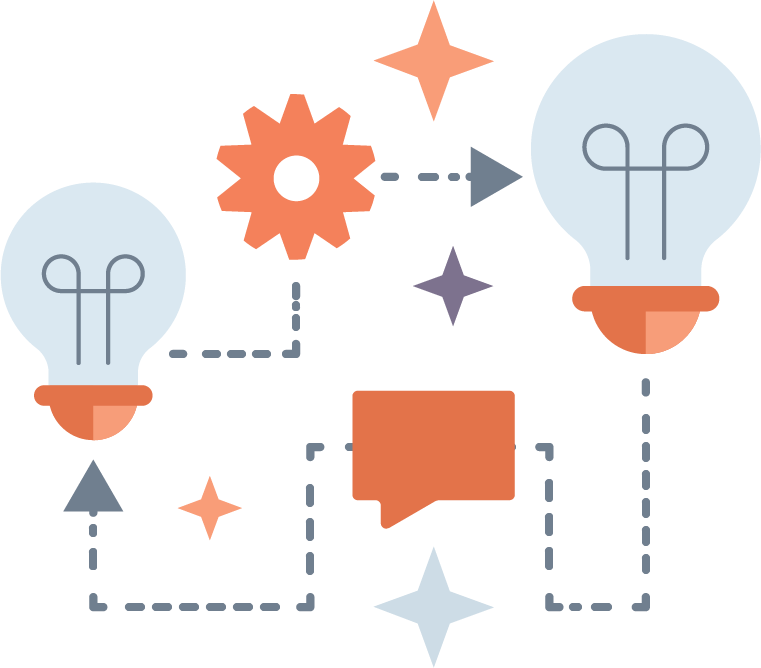

Open Technologies
Environment

About
This is the landing for the portion of the Postman Open Technologies program that focuses on open environmental data, putting APIs to work to make data available for use in applications. This area is all about showcasing open data providers, the data the providers, and helping them the valuable resources they possess more accessible.